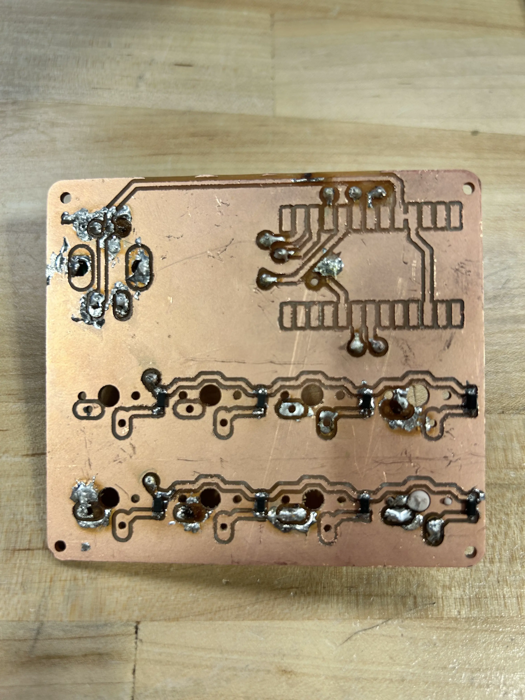
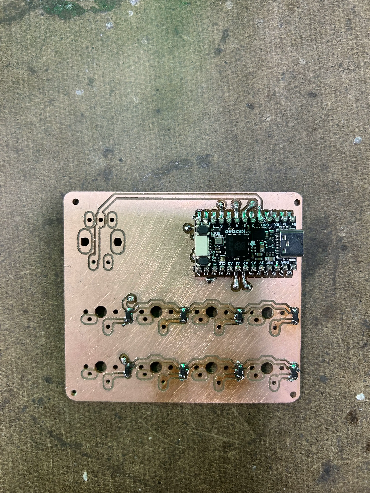
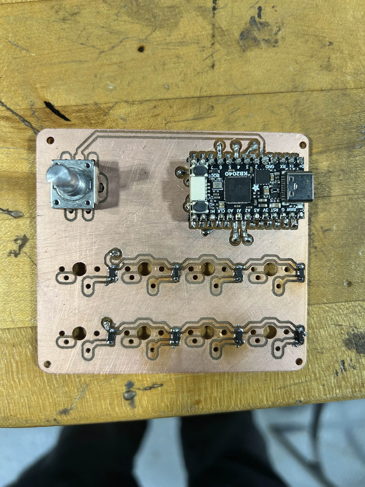
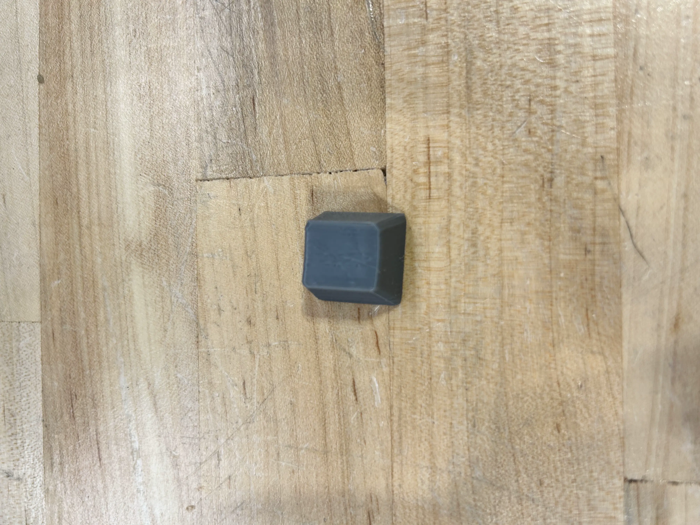
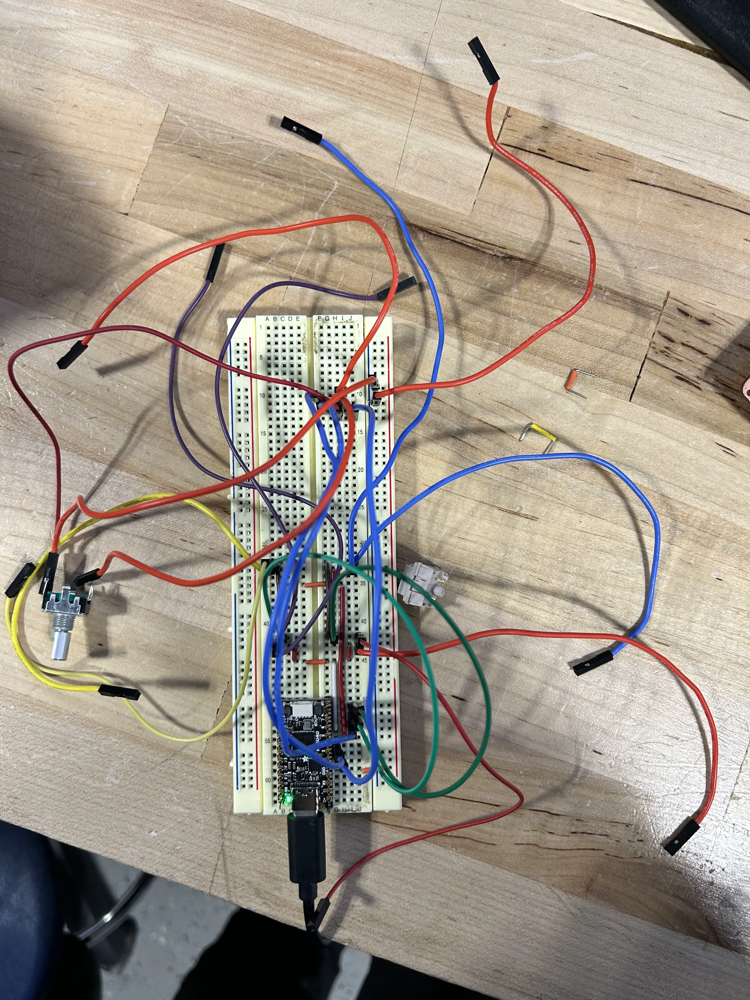

junior week nov. 20th, 2025
diodes
started by soldering the diodes. miles showed me how to use solder paste and the air gun to solder the diodes due to their size.
furthermore, i decided to use my first pcb (the broken board) as aa way to practice my soldering. since i had a bunch of extra diodes, i soldered them all on the broken board and probed them to ensure they were working

only shorted one of the diodes
with this done, i started to solder them onto the main board

encoder
after finishing the diodes, i decided to solder the encoder next. however, i ran into a problem when doing so.
i accidently soldered it backwards (it should be on the side opposite to the kb2040)

yet again, miles saved me by showing me how to use solder wick to remove the solder, and resoldered it.
switches
with everything else done, the switches were the final thing i needed to solder.
we had a problem though. the switches laid flush, and we needed to solder both sides of one of the pads for each switch.
miles and tim both helped try and figure it out, until mr. christy pointed out we had via's.
tim showed me how via's worked, and i started soldering all the switches.
however, on the final one, i accidently pulled the pad on the pcb, causing me to be unable to solder the final switch properly.
tim figured out some solution, and fixed my board.
front and back of the double sided pcb. my first one
while i was soldering, i also started printing the r1 1x1 keycaps which i would be using

i tried two orientations. one at an angle, and the other where it was printed on the top. i ended up printing it on an angle, as it didn't ruin the surface of the keycap and taking out the small support wasn't too hard.
testing
with everything done, i tried testing out the macropad, just for it to not work. i wasn't sure why this was happening, so i decided to probe everything to figure out what was wrong
while probing, however, i couldn't find any issues. upon closer inspection however, i realized that one of the via's (column 2, digital pin 4) pad was broke. furthermore, row 2 (digital pin 8) also had a problem with it's own via.
me and miles decided to just have the pcb made professionally, but wait until i started the keyboard's pcb so we could get them both at once (and pay less for shipping).
mr. christy was fine with this, but said i should try and recreate it on a breadboard to ensure that my pcb is correct.

my amazing recreation
the switches ended up working, but the rotary encoder wasn't working for some reason. i'm going to have to figure out what's wrong, and adjust my pcb if it's a wiring issue with the encoder.
when i get the encoder working, i can start the keyboard project and hopefully revisit the macropad with a professionally made pcb that results in no errors.